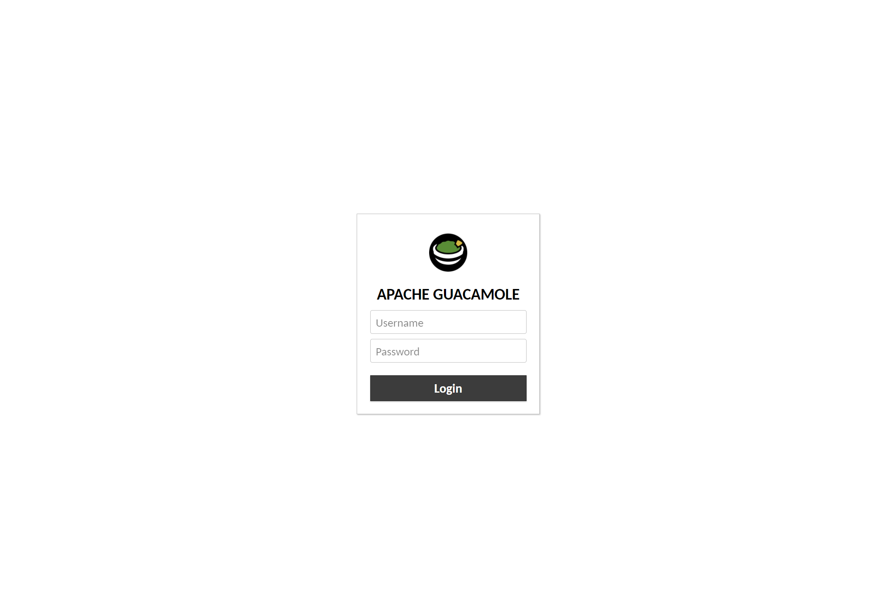
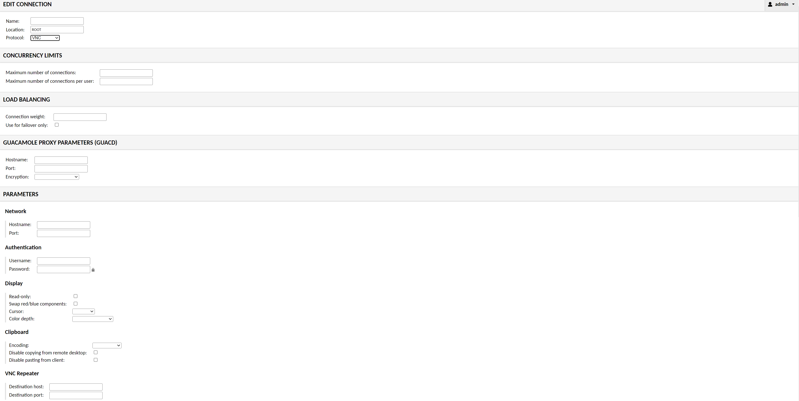

Docker Guacamole, a docker package for setting up access to your computer via a web browser. A friend of mine,
Zach Robinson
, told me about this package which I thought sounded really interesting and wanted to try it myself. I set up this package as well as a VNC server on a Linux Mint OS. This VNC server is what was used to be hosted to the container and how I accessed my home PC merely through a web browser. This could be for more than one device or protocol too. You could set up multiple connections to different servers in the same package session. Before going into that, we should cover what a VNC server is.
A virtual network computing (VNC) server is a computer sharing system that is similar to Remote Desktop Protocol (RDP) but works differently. This includes sharing of graphics and other resources but how it differentiates from RDP is that VNC doesn't use a virtual session like RDP. Instead it uses the same display as what the user would see. For example if you were to use RDP on someone's computer they would not see the mouse going around the screen and the actions being done. For VNC the user would see all of this. I chose to engage with VNC due to the fact that I had never used it before and wanted to have some experience setting it up. This was put on a Linux Mint OS because I liked the GUI display and figured it would be a good one to test this project on. The first step of the docker package was just setting up the VNC server on the PC. To do this, I installed the required packages and did some extra steps that can be viewed
here.
After that part was done I had to actually put docker on the Linux system. You can find easy steps to do this if needed, like
this site
for example. Next I had to use the docker pull command for the right package. The name of the package i pulled was called "oznu/guacamole". After the pull command was done executing, I began to start the guacamole session. To do this I would run a few lines of commands similar to this.
~$ docker run -p 80:8080 -v :/config oznu/guacamole
After the package was up and running, I could access it through just the hosting PC´s ip address. I would enter it into a web browser on another PC while on my network and see a login page.

This page had an automatic username and password as default with both being “guacadmin". This could easily be changed once logged into the site, which is very recommended if you use this container. I created a new account for a custom username and password so i could delete the default login. Once that was done the next part was to set up the connection between this docker package and the VNC server I made earlier.

There was a connections tab which contained the parameters for you to configure for multiple protocols, not just VNC. The options also included SSH, RDP, Telnet and Kubernetes. I entered the hostname of the PC and the credentials of that VNC server I had set up. There are more options you can fill out like load balancing or number of connections but leaving them blank sets it to the default values. Once that was done I tested it by going back to the home tab and clicking the name of the new connection I configured. Just like that I started seeing my Mint home screen within another PC's search engine.
I tested this on other devices in my home network where I would just type my ip address and it would bring me to the login page like normal. I didn’t have to specify due to the port I hosted on was 80 which is the default HTTP number. So far the plan was just to reach this point to make sure I can at least locally connect. But I decided to take this project to another level and make it accessible from outside my home network. To do this I just had to port forward my PC’s LAN ip address to port 80 so when entering my public ip address it would automatically bring me to my guacamole login page. I decided to even try it from my phone and without even being connected to my home network, I could still login.
This would be a very useful project for others who might need an easy accessible setup like this. Having this act as a manager for one or multiple devices with a various selection of connection types. You can even hook it up to a domain name if you wanted to just type in your URL for your guacamole login page. Learning about running docker sessions and running other programs with it was a fun project to do, and I definitely plan on doing other projects with similar aspects. This was also my first Docker project that I had worked with, but definitely not my last one.